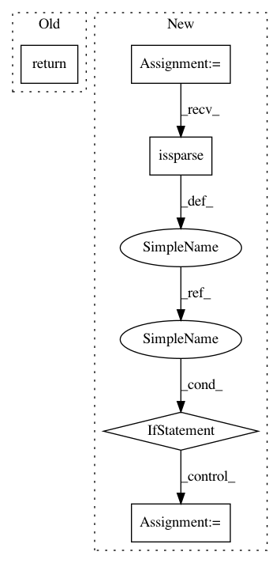

f5122cdab53605b7b800c96d6700b791b8c9add8,librosa/segment.py,,lag_to_recurrence,#,287
Before Change
sub_slice = [slice(None)] * lag.ndim
sub_slice[1 - axis] = slice(t)
return np.ascontiguousarray(lag[sub_slice].T).T
def timelag_filter(function, pad=True, index=0):
"""Filtering in the time-lag domain.
After Change
// Since lag must be 2-dimensional, abs(axis) = axis
t = lag.shape[axis]
sparse = scipy.sparse.issparse(lag)
if sparse:
rec = scipy.sparse.lil_matrix(lag)
roll_ax = 1 - axis
else:
rec = lag.copy()
roll_ax = None
idx_slice = [slice(None)] * lag.ndim
for i in range(1, t):
idx_slice[axis] = i
rec[tuple(idx_slice)] = util.roll_sparse(lag[tuple(idx_slice)], i, axis=roll_ax)
In pattern: SUPERPATTERN
Frequency: 3
Non-data size: 5
Instances
Project Name: librosa/librosa
Commit Name: f5122cdab53605b7b800c96d6700b791b8c9add8
Time: 2016-04-26
Author: brian.mcfee@nyu.edu
File Name: librosa/segment.py
Class Name:
Method Name: lag_to_recurrence
Project Name: KrishnaswamyLab/PHATE
Commit Name: c1e7fb95a360ba4b9af65b173a829c48dbc893a7
Time: 2018-05-30
Author: scottgigante@gmail.com
File Name: Python/phate/phate.py
Class Name: PHATE
Method Name: diff_op
Project Name: librosa/librosa
Commit Name: f5122cdab53605b7b800c96d6700b791b8c9add8
Time: 2016-04-26
Author: brian.mcfee@nyu.edu
File Name: librosa/segment.py
Class Name:
Method Name: lag_to_recurrence
Project Name: scikit-learn-contrib/sklearn-pandas
Commit Name: ae885db17320662cc8c0e940d8e27a30dc105eb1
Time: 2015-11-07
Author: israel.saeta@dukebody.com
File Name: sklearn_pandas/__init__.py
Class Name: DataFrameMapper
Method Name: transform